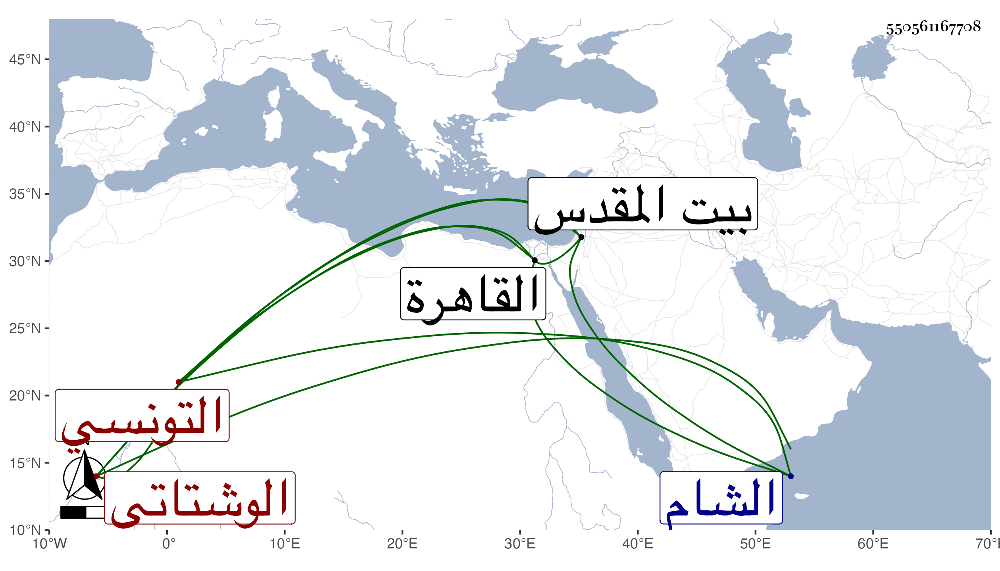

0902Sakhawi.DawLamic.ITO20230111-ara1.EIS1600.550561167708
Biography ID: 550561167708
301
عمر بن عبد الرحمن الوشتاتي بضم الواو ثم معجمة ساكنة بعدها مثناتين بينهما ألف نسبة لوشتاتة من عمل أربس التونسي ويعرف بالحارثي . أخذ عن أبي القسم البرزلي وغيره وارتحل للحج سنة ست وأربعين ولقي هناك أبا الفتح المراغي وغيره ، وأخذ بالقاهرة عن شيخنا حضر دروسه ، وفيها دخل بيت المقدس والشام وأكرم البدر بن التنسي قاضي المالكية مورده وطلع به إلى الظاهر جقمق فأحسن إليه ، ثم رجع إلى بلاده فأقبل عليه الفضلاء بأخرة في الرواية وصار محدث تلك الناحية . وشرح بانت سعاد في مجلدين قرضه له محمد الزلدوي ومحمد القفصي الشابي وغيرهما نظما ، وكان حسن العشرة دمث الأخلاق يستحضر المشارق لعياض وكذا الصحاح للجوهري . ومات سنة سبع وسبعين رحمه الله .
